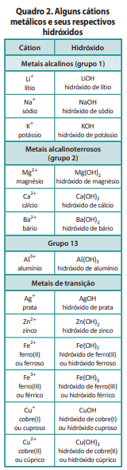
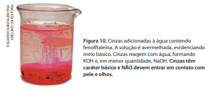
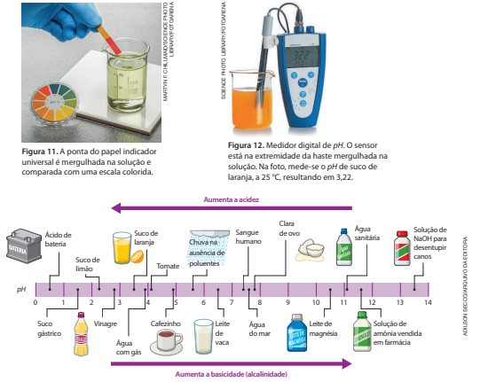

Bases
O hidróxido de sódio, NaOH, é um composto sólido nas condições ambientes de temperatura e pressão (25 °C e 1 atm), constituído de íons Na⁺ e OH⁻ na proporção 1 : 1, organizados em um retículo cristalino. Quando esse composto se dissolve em água, ocorre dissociação iônica, representada por:
O íon OH⁻ é denominado hidróxido. A equação química apresentada pode, então, ser lida assim: hidróxido de sódio sólido dissocia-se em água liberando cátions sódio aquosos e ânions hidróxido aquosos.
Arrhenius propôs a definição: base é um composto que, dissolvido em água, origina OH- como único ânion. Segundo ele, as propriedades coletivas das bases devem ‑se aos íons hidróxido, já que o cátion liberado pode variar de uma base para outra.
O hidróxido de sódio NaOH é uma base de Arrhenius. Outros exemplos são o hidróxido de potássio (KOH), o hidróxido de cálcio (Ca(OH)₂) e o hidróxido de bário (Ba(OH)₂), cujas equações de dissociação iônica em água são:

O Quadro 2 lista cátions metálicos relevantes para nosso estudo. Também relaciona as bases, ou hidróxidos, que apresentam esses cátions na sua consti‑ tuição. (Existem muitos outros cátions metálicos e, sempre que necessário, você deve buscá ‑los em fontes confiáveis de informação.)
As bases formadas por átomos de metais alcalinos (grupo 1) são bastante solúveis em água. As formadas por metais alcalinoterrosos (grupo 2), com exceção do hidróxido de berílio (Be(OH)₂) e do hidróxido de magnésio (Mg(OH)₂), embora não sejam tão solúveis como as de metais alcalinos, apresentam razoável solubilidade em água. O hidróxido de berílio, o hidróxido de magnésio e os hidróxidos de metais que não sejam dos grupos 1 e 2 apresentam reduzida solubilidade em água. Independentemente do grau de solubilidade, todas elas dissociam-se ionicamente em água, liberando OH⁻ (aq), o que caracteriza esses hidróxidos como bases de Arrhenius.
Uma solução de base em água é básica ou alcalina. A palavra “alcalino” vem de uma expressão árabe usada para designar as cinzas e faz alusão ao fato de que as cinzas, em contato com água, produzem bases de efeito extremamente corrosivo sobre pele e olhos (Fig. 10). Os íons OH⁻ (aq), responsáveis pela alcalinidade das soluções aquosas de bases de Arrhenius, têm ação corrosiva sobre as proteínas e os lipídios das membranas celulares (que são lipoproteicas), danificando as células.

As bases têm diversas aplicações relevantes em laboratórios e indústrias. Sua manipulação deve, de modo geral, ser feita por profissionais capacitados, com equipamentos de proteção individual e obedecendo a normas de segurança. Mesmo os hidróxidos pouco solúveis em água podem oferecer risco, pois muitos cátions metálicos, especialmente os de metais pesados, são nocivos à saúde se ingeridos ou se entrarem em contato com pele e olhos.
Entre os hidróxidos de maior importância estão o hidróxido de sódio (NaOH), conhecido como soda cáustica, empregado na fabricação de papel e sabão, e o hidróxido de cálcio (Ca(OH)₂), também denominado cal hidratada ou cal extinta, utilizado para preparar argamassa, para fazer pintura de paredes (caiação) e para reduzir a acidez do solo antes do plantio (calagem).
A ferrugem, que é o produto da corrosão de objetos de ferro expostos ao gás oxigênio e à água, consiste de uma mistura de Fe(OH)₂ e Fe(OH)₃.
A amônia, NH3, é uma substância molecular solúvel em água, gasosa nas condições ambientes de temperatura e pressão (25 °C e 1 atm), de cheiro forte e irritante, cuja inalação, ingestão ou contato com pele e olhos é extremamente perigosa. Ela não é uma base de acordo com a definição de Arrhenius, pois não apresenta íons hidróxido em sua composição para que possa liberá ‑los em meio aquoso. Contudo, a amônia reage com água resultando em solução alcalina. A reação, denominada ionização da amônia, pode ser assim equacionada:
O cátion , produzido nesse processo, é denominado amônio.
5. A escala de pH
A água líquida pura é considerada um meio aquoso neutro. Quando dissolvemos um ácido nela, isso produz uma solução ácida, ou meio ácido. E quando dissolvemos uma base na água, isso produz uma solução básica (solução alcalina), ou meio básico (meio alcalino).
Para expressar a acidez ou a alcalinidade de uma solução, emprega-se a escala de pH (grandeza adimensional). Quanto menor o pH, maior a acidez de uma solução (ou, equivalentemente, menor sua alcalinidade). Quanto maior o pH, maior a basicidade (alcalinidade) de uma solução (ou, equivalentemente, menor sua acidez). Na temperatura de 25 °C:
- uma solução neutra tem pH = 7.
- uma solução ácida tem pH < 7.
- uma solução básica (alcalina) tem pH > 7.

O pH aproximado de uma solução pode ser determinado com o uso de papel indicador universal (Fig. 11). Para uma medida mais precisa, emprega-se um medidor digital de pH (Fig. 12), também denominado peagâmetro (ou pHmetro). O esquema da Figura 13 exemplifica valores típicos de pH.
Exercícios
10. Nas cinzas estão presentes substâncias que, em contato com a água, promovem o aparecimento, entre outras, das substâncias conhecidas como hidróxido de potássio e hidróxido de sódio. Por isso, não se deve deixar que cinzas entrem em contato direto com a pele e os olhos. Escreva uma fórmula que represente cada uma dessas duas substâncias.11. (Unisinos‑RS) Um aluno, trabalhando no laboratório de sua escola, deixou cair uma certa quantidade de solução alcoólica de fenolftaleína sobre um balcão que estava sendo limpo com sapólio. O local onde caiu a fenolfta‑ leína adquiriu, quase que imediatamente, uma coloração violácea. Esse aluno, observando a mancha violácea, concluiu que:
- a. o sapólio deve ser um meio ácido.
- b. o sapólio deve ser um meio alcalino.
- c. o sapólio deve ser um meio neutro.
- d. o sapólio tem características de um sal.
- e. a fenolftaleína removeu o sapólio do local.
12. Como parte de um experimento, uma pesquisadora dis‑ solveu quatro substâncias, separadamente, em água. Ela sabe que as equações do que ocorreu são:
Frasco 1: C₁₂H₂₂O₁₁ (s) → C₁₂H₂₂O₁₁ (aq)
Frasco 2: CaBr₂ (s) → Ca²⁺ (aq) + 2 Br⁻ (aq)
Frasco 3: HBr (g) + H₂O ( l) → H₃O⁺ (aq) + Br⁻ (aq)
Frasco 4: Ca(OH)₂ (s) → Ca²⁺ (aq) + 2 OH⁻ (aq)
- a. Em qual dos frascos a pesquisadora desejava solução ácida? E solução alcalina? Explique.
- b. Quais dos frascos não contêm ácido nem base?
- c. Um único desses processos é muito comum em cozinhas. Investigue e explique qual é.
- d. Quais dos frascos contêm solução eletrolítica?
- e. O que se constataria ao testar, separadamente, cada solução com papel de tornassol azul, papel de tornassol vermelho e fenolftaleína?
13. A legislação brasileira proíbe o descarte, em rios e lagos, de efluentes com pH menor que 5 ou maior que 9. Explique o que é um efluente (pesquise, se for necessário) e qual é a diferença fundamental entre um com pH < 5 e outro com pH> 9.
14. Entre um suco de maracujá com pH = 2,7 e um de goiaba com pH = 3,6, qual é mais ácido? Explique
15. O líquido das baterias de automóvel (solução aquosa concentrada de ácido sulfúrico) e o líquido para remover crostas de gordura de fornos (solução aquosa concentrada de hidróxido de sódio, ou soda cáustica) são extremamente perigosos e corrosivos e só devem ser manipulados por profissionais treinados com equipamento de proteção individual. Esclareça qual é a origem da periculosidade de cada um dos produtos incluindo equações químicas na sua explicação.
16.(UFRGS‑RS) Aos frascos A, B e C, contendo soluções
aquosas incolores de substâncias diferentes, foram adi‑
cionadas gotas de fenolftaleína.
Observou‑se que só o frasco A passou a apresentar
coloração rósea. Identifique a alternativa que indica subs‑
tâncias que podem estar presentes em B e C.
- a. NaOH e NaCl
- b. H₂SO₄ e HCl
- c. NaOH e Ca(OH)₂
- d. H₂SO₄ e NaOH
- e. NaCl e Mg(OH)₂
17. (Mackenzie ‑SP) Identifique, das misturas citadas,
aquela que apresenta maior caráter básico.
- a. Leite de magnésia, pH = 10
- b. Suco de laranja, pH = 3,0
- c. Água do mar, pH = 8,0
- d. Leite de vaca, pH = 6,3
- e. Cafezinho, pH = 5,0
18. (Unifor‑CE) Qual das amostras seguintes apresenta
maior pH ?
- a. suco de limão
- b. vinagre
- c. água destilada
- d. solução aquosa de NaCl
- e. solução aquosa de NaOH